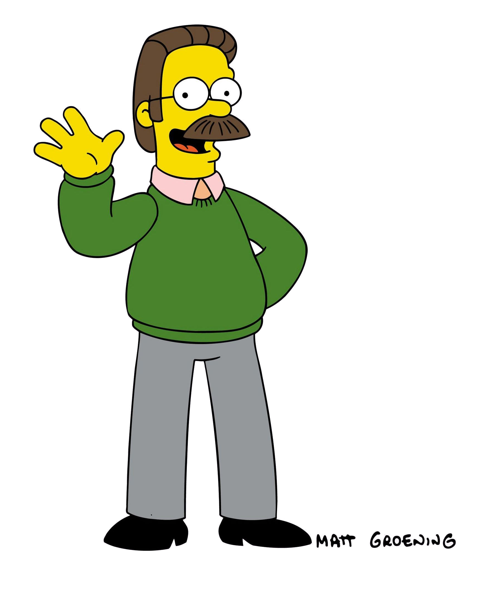

Es el personaje principal de la serie, una sátira de los norteamericanos promedio, en palabras de su mismo creador Matt Groening. Las bromas indirectas se pueden encontrar en su personalidad, su actitud, su filosofía, su idiosincrasia, etc. Los rasgos esenciales de la personalidad de Homer se presentaron desde sus inicios. Homer |
Ha ahondado en los roles arquetípicos que suelen desempeñar las esposas amas de casa en las series de animación. Su apasionada y ciega dedicación a su desagradecida familia ha servido de modelo moderno para otros personajes femeninos en series de animación posteriores. Marge |

Es decididamente el más rebelde y travieso de la familia. Es un muchacho simpático y también muy travieso, que hace muchas bromas con su mejor amigo Milhouse. Sigue los programas de su ídolo Krusty el Payaso. Es desobediente y hace todo lo que le pasa por la cabeza. Bart |

Es un personaje principal de la serie de televisión animada Los Simpson. Es la hija mediana de Homer y Marge Simpson, y la hermana de Bart y Maggie. Goza de notable protagonismo y complejidad en la serie aunque es uno de los personajes principales menos popular. Lisa |
Es un personaje principal de la serie. Maggie es la tercera y la hija más joven de Homer Simpson y Marge Simpson, con apenas dos años de vida. Debido a que aún no puede hablar, es la que menos protagonismo e importancia tiene en la familia. Siempre se la ve succionando su chupete y cuando camina suele tropezar y cae de rodillas. Maggie |
|---|---|---|---|---|
|

Ned Flanders vive en la casa de al lado de la familia Simpson, por lo tanto es su vecino. Normalmente es odiado por Homer Simpson, que lo define como "peor que Monstruo de Frankenstein y el Dr. No". Es un cristiano devoto y es el más amigable y compasivo de todos los habitantes de Springfield. Ned Flanders |

Duffman es la mascota oficial de la cerveza más consumida de Springfield, la Duff. Su voz original se la da Hank Azaria. Apareció por primera vez en "The City of New York vs. Homer Simpson". Duffman |

Milhouse Van Houten es el mejor amigo de Bart Simpson, además de estar enamorado de la hermana de este; Lisa Simpson. Milhouse asiste a la Escuela Primaria de Springfield, donde es agredido por varios bravucones del colegio como son Jimbo, Dolph, Kearney y Nelson ya que es demasiado débil. Milhouse |

Moe es propietario y cantinero de "La taberna de Moe" o más conocida como Moe's. Bart Simpson llamaba ocasionalmente al lugar para molestar a Moe, y luego retiraron esta secuencia definitivamente de la serie. Esta taberna es frecuentada por Barney, Homer, Lenny y Carl entre otros. Moe Szyslak |

Ralph Wiggum es el hijo del jefe de policía Clancy Wiggum y de Sarah Wiggum. Es compañero de clase de Lisa Simpson. Es bien conocido por su comportamiento errático, rozando incluso con la estupidez y la locura. Ralph Wiggum |
|
Es un personaje malvado y recurrente. Es el propietario de la Planta Nuclear de Springfield y es el jefe de Homer Simpson. Es atendido casi todo el tiempo por Waylon Smithers, su leal y adulador ayudante, asesor, confidente y admirador secreto. El señor Burns es el ciudadano más rico, poderoso y anciano de Springfield. Sr. Burns |
Carl es afroislandés, budista y tiene el grado académico de Máster en Física Nuclear, fanático de los bolos y tomar en el bar de Moe,también es un poco racista. Tiene tendencias liberales en términos de política y; cierta vez, describió al presentador local de televisión Kent Brockman como un "ultraderechista chiflado". Carl Carlson |
Es el dueño de El badulaque, a la cual recurren diariamente los Simpson para comprar sus víveres. Es un inmigrante indio e hindú y, como todos los personajes de Los Simpson, representa un estereotipo: el dueño de origen hindú de una tienda o el inmigrante en busca del sueño americano. Apu Nahasapeemapetilon |
Es el abuelo paterno de la familia protagonista, bastante despreciado por sus seres queridos y marginado por su condición de adulto mayor. Su rol en la serie es generalmente auxiliar: cuida de los niños cuando no tienen con quien estar por el motivo de que nadie quiere cuidar a los niños Simpson. Abraham Simpson |

Es la satirización del típico alcohólico que pasa casi todo el día bebiendo. Su voz es bastante grotesca eructando de vez en cuando producto de su alcoholismo. Barney Gumble |